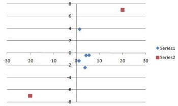
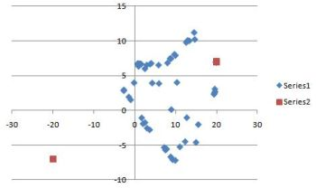

Project 5 — Particle Swarm Optimization
Parameters
The following is some guidance for the ranges of the parameters.
Number of particles: A typical range is 20 to 40. For many
problems, as few as 10 particles may be enough. For larger or more
difficult problems, 100, 200, or more particles might be more
appropriate.
Inertia: Generally the range is [0, 1], typically very close
to 1.
Cognition and social parameters: Usually they are nearly
equal and typically around 2, but they can range from 0 to 4.
World width and world height: The range in the x and
y directions, respectively. A good range is –50 to 50 in both
directions. In that case, both the world width and height would be
100.
Maximum velocity: Limits how much a particle can move for a
given iteration. Typical values to try are 1, 2, and 10. Some
implementations define maximum velocity as the world width or
height.
Data representation
It’s probably easiest to keep the x and y
coordinates in separate arrays/variables for position, velocity,
personal best, and global best.
Initialization
The position of each particle should be initialized to a random
number in the range for each coordinate (e.g. between –50 and 50 in
both directions).
The velocity of each particle can be initialized to 0.
The personal best for each particle can be initialized to that
particle.
The global best can be initialized to the particle with the best
fitness, as given by the objective functions Q(p)
(i.e. Q(position)).
Of course, both the x and y coordinates of each of
these should be initialized.
Stopping condition for main update loop
Keep iterating until the error in the x and y
coordinates drops below a certain threshold (e.g. 0.01). In case the
system never fully converges, a second condition should be added,
which is a maximum number of iterations. Both of these conditions
can be given in a while loop.
Updating the particles
Implement the following update rules:
Velocity
velocity' = inertia * velocity + c_1 * r_1 *
(personal_best_position - position) + c_2 * r_2 *
(global_best_position - position)
where c_1 is the cognition parameter, c_2
is the social parameter, and r_1 and r_2
are random numbers in [0, 1].
The positions and velocities are actually vectors, so you would
implement this formula for both the x and the y
coordinates.
The velocity needs to be scaled in order to keep it within range.
Otherwise, the positions will become too large and often go out of
bounds, and your program will behave wildly. The following is how to
scale the velocity:
if velocity_x2 + velocity_y2
> maximum_velocity2
velocity = (maximum_velocity/sqrt(velocity_x2
+ velocity_y2)) * velocity
Again, do this for both the x and y coordinates.
Position
position' = position + velocity'
Personal best
if(Q(position) > Q(personal_best_position))
personal_best_position = position
Global best
if(Q(position) > Q(global_best_position))
global_best_position = position
Measuring performance
At the very least, calculate the average error in the x and
y coordinates of the particles. This can be done by
error_x += (position_x[k] - global_best_position_x)2
error_y += (position_y[k] - global_best_position_y)2
for each particle k.
Then
error_x = sqrt((1/(2*num_particles))*error_x)
error_y = sqrt((1/(2*num_particles))*error_y)
This is the measure that should be included as part of your stopping
condition.
You can plot this error over the number of iterations to get a
qualitative view of the performance.
As mentioned in the Project 5 handout, you can also compute the
percentage of particles that have converged to within a small
distance of the global maximum. You can also plot this over the
number of iterations.
Number of epochs until convergence is another measure of
performance.
A purely qualitative assessment is to obtain a scatter plot of the
particles after the updating iterations. Below are two examples of
what you might see for Problem 2 (two maxima). In the first graph,
most of the points have converged to the global maximum, although
they are covered up by the global maximum point on the graph.
 
The more performance measures and graphs you analyze, the higher
grade you can earn.
Neighborhood (local) best (graduate part)
The requirement is to implement a ring topology with neighborhoods
given by the 2-nearest neighbors. Define a permutation of the
particles, where a particle’s neighbors are the array elements
before and after it (allow for wraparound). You can use the position
arrays as the permutation, where the neighbors are accessed by the
array indices. The topology will not change during the iterations of
the algorithm. That is, each particle will keep its same two
neighbors throughout the iterations.
The velocity formula is modified as follows:
velocity' = inertia * velocity + c_1 * r_1 *
(personal_best_position - position) + c_2 * r_2 *
(global_best_position - position) + c_3 * r_3 *
(local_best_position - position)
The best neighbor is the particle whose Q(position) is
the largest.
You can try k-nearest neighbors for extra credit. For example,
4-nearest neighbors are given by the 2 elements before and the 2
elements after the given particle.
For the Euclidean distance method (extra credit), the nearest
neighbors of a particle are those that are within a given radius as
measured by Euclidean distance. The radius is another parameter that
can vary over a range of values.
You can also try other topologies for extra credit, such as star or
wheel.